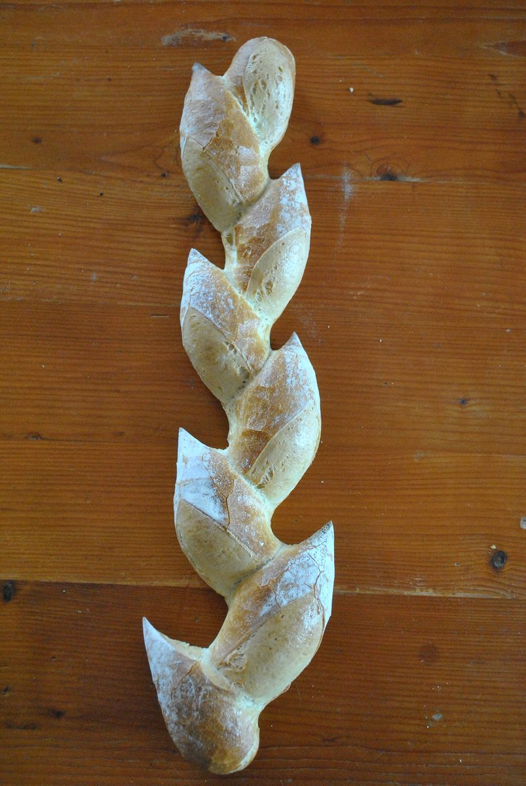

ベーカリー / 長野県伊那市
とみがたベーカリー
長野県伊那市にあるパン屋「とみがたベーカリー」のご案内ページです。営業時間やメニューなど、詳しいことは準備中。電話は 0265-98-5509、Instagramもご覧ください。
ここから先は、コースターの高低図のように並べたパンの写真です。
制作側の連想
「ジェットコースターの高低図」で並べてみる
お店の由来や理念は分かりません。制作側は、パンの膨らみ(生地がのぼり、てっぺんで焼き上がる)から、遊園地のジェットコースターの高低図を連想しました。ゆっくりのぼって、てっぺんから一気にくだり、ゴールへ。このサイトでは5つのページを「発車・のぼり・てっぺん・くだり・ゴール」に見立て、写真の高さをそろえずに段差をつけて並べています。制作側の連想で、お店の理念・由来とは無関係です。
発車からゴールまで(写真はすべてイメージ)
のぼって、てっぺんで、くだる5枚。
写真はお店のものではなく、国外または撮影地不明のフリー素材です。お店や商品を写したものではありません。

細長いパンが重なる(イメージ) 
切れ目が穂の形に並ぶ(イメージ) 
十字の切れ目が入った丸いパン(イメージ) 
金網の上の丸いパン(イメージ) - ゴール
ご案内
お店のこと(確認できたものだけ)
| 所在地 | 〒396-0621 長野県伊那市富県南福地9842-1 |
|---|---|
| 電話 | 0265-98-5509 |
| 営業時間 | 準備中 |
| 定休日 | 準備中 |
| ご予約 | 準備中 |
| 駐車場 | 準備中 |
| SNS | Instagram @tomigatabakery |